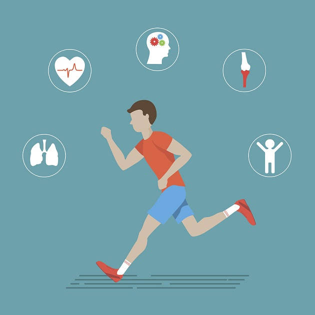
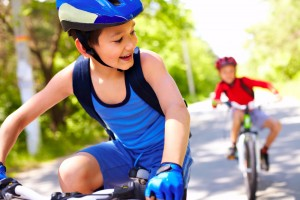

Beneficios del Deporte para la Salud
Beneficios físicos de la actividad física
- Mejora la forma física y la resistencia.
- Regula la presión arterial.
- Ayuda a mantener una buena densidad ósea.
- Mejora la flexibilidad.
- Fortalece músculos, tendones, ligamentos y articulaciones.
- Ayuda a perder peso.
- Reduce el riesgo de padecer diabetes de tipo 2.
- Fortalece el corazón y mejora la salud cardiovascular.
- Mejora la condición aeróbica.
- Reduce el riesgo de padecer ciertos tipos de cáncer como, por ejemplo, cáncer de mama o cáncer de pulmón.
- Evita la osteoporosis.
- Fortalece el sistema inmunológico.
- Ayuda a controlar el colesterol.
- Mejora la digestión.
- Regula el ritmo intestinal.
- Nos hace más fuertes.
- Aumenta la esperanza de vida.

Beneficios mentales de la actividad física
- Reduce el estrés.
- Favorece el sueño.
- Ayuda a combatir la ansiedad.
- Mejora la autoestima.
- Disminuye la agresividad y la ira.
- Reduce la ansiedad y la angustia.
- Combate la depresión.
- Mejora la concentración y la memoria (Alzheimer).
- Aumenta el estado de alerta.
- Evita el aislamiento social y mejora las relaciones con los demás.
- Ayuda a ser más productivo.
- Mejora el humor.
- Es útil para controlar y combatir las adicciones.
